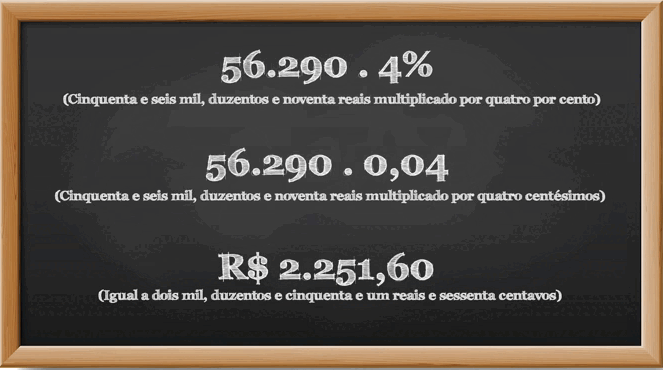

Matemática
Neste módulo, vamos abordar os assuntos relacionados ao planejamento e à organização financeira. Aprenderemos como podemos cuidar do nosso dinheiro e como se classificam as despesas e as receitas. Vamos apresentar dicas de organização financeira e conheceremos os tipos de orçamento pessoal e familiar. Em seguida, estudaremos os tributos e a diferença entre taxa e imposto, bem como alguns impostos federais, estaduais e municipais que impactam nossa vida. Encerramos esse módulo aprendendo como calcular alguns impostos do nosso dia a dia. Venha conosco aprender um pouco mais sobre como cuidar do nosso dinheiro utilizando conhecimentos matemáticos.
Planejamento e organização
Planejamento financeiro é uma forma estruturada e pensada para lidar com nossas finanças, sabendo quanto a gente ganha, quanto a gente gasta e o que a gente quer conquistar no futuro. É como ter um mapa que nos guia para alcançar nossos objetivos financeiros. Já a organização financeira é colocar cada centavo no lugar certo, sabendo para onde vai cada real que entra e sai da nossa vida. É saber priorizar nossos gastos, economizar sem perder o que a gente gosta e evitar aquele “sufoco” no final do mês.
Com planejamento e organização, podemos traçar objetivos tanto para nós mesmos quanto para nossa família. Para isso, devemos ter persistência, não é mesmo? Aquela força que não pode faltar para alcançar o que você deseja financeiramente. É possível visualizar o que está por vir e montar estratégias para realizar seus desejos financeiros. Isso traz uma sensação de segurança e estabilidade, que traz confiança, sem temer o futuro.
Uma opção para organizar e auxiliar a gestão de sua vida financeira é a elaboração de um orçamento doméstico.
Então, que tal aprender mais sobre organização financeira e orçamento doméstico?
Confira o diálogo a seguir:
Família Silva
Família Soares
A mãe está sentada à mesa, conversando com sua família com um bloco de notas e uma caneta na mão e as feições de preocupação.
Mãe:
- Pessoal, precisamos conversar. Estava olhando nosso orçamento doméstico dos últimos dois meses e fiquei bem preocupada com nossos gastos.
Filha:
- Nossa! Pelo visto, vamos ter que rever nosso planejamento para não ficarmos no vermelho e poder poupar para viajar no final do ano.
O pai faz uma cara de chateado e o filho fica sonhando com seu videogame batendo asas e indo embora.
Sabe-se que a formação familiar dos brasileiros é bastante diversificada. Há famílias formadas por pessoas que moram sozinhas e arcam com todas as despesas; casais que juntam suas rendas e dividem todos os gastos da casa; amigos que moram juntos e cada um se responsabiliza por uma ou mais despesas da residência; pessoas consideradas “chefes de família”, que constituem a única renda da família inteira, entre outras variações. Portanto, entende-se que os planejamentos financeiros podem ter diferentes formas e modelos.
Para compreender melhor, aprenda agora alguns conceitos importantes.
Orçamento/planejamento financeiro
É um conjunto de ações que ajudam a planejar e organizar os recursos financeiros, sejam eles pessoais ou familiares.
Receitas
São rendimentos da família durante um período, como, por exemplo, salário, aposentadoria, comissões de vendas, aluguel de imóveis, benefício de programas sociais etc.
Despesas
São os gastos como moradia, educação, lazer, alimentação, saúde, impostos e contas diversas, que a família tem durante determinado período. Essas despesas se dividem em fixas, que são aquelas que possuem valor constante ao longo dos meses, e despesas variáveis, que são aquelas cujo valor oscila em cada mês. Por exemplo, as compras no mercado, que a cada mês possuem um valor final diferente.
Exemplos de despesas no orçamento familiar
Despesas fixas
- Aluguel/prestação de casa
- Condomínio
- Empregada doméstica/diarista
- Escola particular dos filhos
- Faculdade dos filhos
- Plano odontológico
- Prestação do carro
- Seguro do carro
- Seguro de saúde
- IPTU/IPVA
Despesas variáveis
- Alimentação
- Cuidados pessoais
- Transporte/combustível/estacionamento
- Água/luz/gás
- Cheque especial/cartão de crédito
- Passeios/viagens
- Cinema/teatro
- Farmácia
- Vestuário
- Cuidados com animais de estimação
Conforme estudamos, as despesas e as receitas fazem parte do nosso orçamento financeiro e precisamos manter uma organização para obter um equilíbrio entre esses dois elementos. Isso não apenas promove uma gestão financeira saudável, mas também contribui para a realização de metas financeiras a curto e longo prazo.

1) Clique e arraste os diferentes itens listados para organizá-los em receitas e despesas.
Receitas
Despesas
1) Conforme estudamos, as despesas e as receitas fazem parte do nosso orçamento financeiro e precisamos manter uma organização para obter um equilíbrio entre esses dois elementos. Isso não apenas promove uma gestão financeira saudável, mas também contribui para a realização de metas financeiras a curto e longo prazo.
Dessa forma, organize os itens listados em receitas e despesas:
Rendimentos de aluguel de imóveis - Juros de poupança - Salário - Horas extras - Aluguel - Prestação da casa - Condomínio - Conta de água - Gás - Cinema - Viagens - Medicamentos - Exames - Empréstimos - Impostos
| RECEITAS |
|---|
| DESPESAS |
|---|
Gabarito:
Receitas:
Rendimentos de aluguel de imóveis
Juros de poupança
Salário
Horas extras
Despesas:
Aluguel
Prestação da casa
Condomínio
Conta de água
Gás
Cinema
Viagens
Medicamentos
Exames
Empréstimos
Impostos
2) Luciana resolveu organizar suas finanças, pois não consegue fazer com que sobre dinheiro no final do mês para colocar na poupança. Porém, como ela está fazendo essa organização pela primeira vez, não sabe classificar suas contas. Para ajudá-la, como podemos classificar a conta de luz, o aluguel e o cartão de crédito?
a) Despesa fixa, despesa variável, receita.
b) Despesa variável, despesa fixa, despesa variável.
c) Receita, despesa fixa, despesa variável.
d) Despesa fixa, despesa variável, despesa fixa.
Gabarito: B
Finanças
Assista agora o vídeo Organizando suas finanças.
Como organizar as finanças?
A elaboração do orçamento financeiro nem sempre é uma tarefa fácil. Ter um orçamento pessoal ou familiar resulta em vários benefícios para sua vida financeira. Definir quais são as suas necessidades e planejar todos os gastos (despesas), considerando sempre a renda disponível (receita), é uma forma de começar a ter um controle maior de seu dinheiro e economizar.
A meta em um mês pode ser apenas não gastar mais do que se ganha; em outros meses, pode ser economizar para realizar um sonho, como viajar, fazer um curso, tirar a carteira de motorista, comprar algo que seja importante para um ou mais integrantes da família. O importante é dar um primeiro passo para essa organização. Para isso, foram separadas algumas dicas a fim de organizar suas finanças, praticando pequenas atitudes diárias. Confira a seguir:
- Anotar suas despesas e suas receitas
- Definir prioridades de acordo com a renda da família
- Não gastar mais do que ganha
- Praticar o consumo consciente
- Eliminar as dívidas
- Fazer uma poupança
- Envolver a família na organização das finanças
Você também pode utilizar algumas ferramentas, que podem facilitar o registro e o controle financeiros.
Anotações em cadernetas/cadernos
São registros manuais realizados em um caderno ou uma caderneta à medida que existem saídas ou entradas de dinheiro.
Figura 1 – Caderno de organização financeira
Fonte: Vidal et al (s.d.)
Folha de caderno com as seguintes anotações:
Abril de 2022
Receita:
Salário – 01/04/2022: R$ 2.500,00
Despesas fixas:
Aluguel: R$ 570,00
Água: R$ 40,00
Luz: R$ 85,00
Internet: R$ 100,00
Transporte: R$ 180,00
Alimentação: R$ 380,00
Educação: R$ 120,00
Despesas variáveis
Lazer e cultura: R$ 100,00
Cartão de crédito: R$ 180,00
Total de receitas: R$ 2.500,00
Total de despesas: R$ 1.755,00
Saldo: R$ 745,00
Planilhas eletrônicas
São registros realizados em sistemas de planilhas eletrônicas, como o Excel.
Figura 2 – Planilha de gastos diários do Excel
Fonte: Adaptado de Terceiro (2023)
Planilha demonstrativa dos gastos diários com as seguintes informações:
Controle de gastos pessoais diários
Semana de 04/04 a 08/04/2022
Colunas: Itens/dias da semana/total semanal
Padaria
Açougue
Transporte
Almoço
Lanche da tarde
Farmácia
Lazer
Feira da semana
Aplicativos de finanças pessoais
São os aplicativos de finanças pessoais que podem ser visualizados por meio de smartphones. Eles contêm algumas características dos sistemas, como a apresentação de relatórios, gráficos e alertas, a também a vantagem de estarem na “palma da mão” do usuário.
Figura 3 – Aplicativo de finanças pessoais
Fonte: Adaptado de Fast Life (2020)
Imagem de uma tela de celular com um aplicativo de finanças pessoais com as seguintes informações:
Visão geral – abril
Contas – Saldo acumulado R$ 5.000,00
Receitas R$ 2.500,00
Despesas R$ 1.775,00
Despesas por categorias
Moradia R$ 570
Pagamentos R$ 180,00
Educação R$ 120,00
outros…
É importante destacar que cada pessoa pode escolher aquela ferramenta que mais se adapta à sua realidade e necessidade.
Para treinar seus conhecimentos, faça os exercícios a seguir.
Espera ODA
3) O aprendizado em educação financeira contribui para uma melhor gestão de
nossas finanças. Podemos aplicar, de forma organizada, os nossos recursos financeiros. Sabendo disso,
complete a frase a seguir assinalando a resposta que completa as lacunas.
O _________ traz vários ________, ajuda a definir quais são as suas __________, orienta os seus
____________, considerando sua _________ disponível, de forma organizada.
a) dinheiro, gastos, receitas, benefícios, necessidade
b) gasto, malefícios, necessidades, orçamentos, compra
c) orçamento financeiro, significados, compras, resultados, receita
d) orçamento financeiro, benefícios, necessidades, gastos, receita
Gabarito: D
Tipos de orçamentos
Clique ou toque para conferir alguns tipos de orçamento.
Orçamento pessoal
É um instrumento de planejamento financeiro feito com o objetivo de prever gastos e organizar as finanças pessoais para que estejam em equilíbrio, ou seja, adequar suas despesas às suas receitas, atendendo bem às pessoas que moram sozinhas ou que desejam organizar seus gastos individualmente.
Orçamento familiar
É uma ferramenta utilizada para registrar e detalhar as receitas (entradas de dinheiro) e as despesas (saídas de dinheiro) de uma família durante um período específico, geralmente mensal ou anual.
Modelo de orçamento
Observe um exemplo simplificado de um orçamento familiar, com base em uma família composta de duas pessoas que trabalham e dividem igualmente as despesas.
| ORÇAMENTO MENSAL – MARÇO/23 | |||
|---|---|---|---|
| RECEITAS | PREVISTAS (EM R$) | REALIZADAS (EM R$) | DIFERENÇA EM R$ |
| Salário 1 | 1.500,00 | 1.500,00 | 0 |
| Salário 2 | 1.450,00 | 1.450,00 | 0 |
| Total de receitas | 2.950,00 | 2.950,00 | 0 |
| DESPESAS | PREVISTAS (EM R$) | REALIZADAS (EM R$) | DIFERENÇA EM R$ |
| Alimentação | 250,00 | 328,74 | -78,74 |
| Aluguel | 590,00 | 590,00 | 0 |
| Água | 50,00 | 48,88 | 1,12 |
| Luz | 100,00 | 90,12 | 9,88 |
| Vestuário | 40,00 | 62,95 | -22,95 |
| Transporte | 150,00 | 140,11 | 9,89 |
| Cuidados pessoais | 65,00 | 65,00 | 0 |
| Assistência à saúde | 88,34 | 88,34 | 0 |
| Educação | 35,00 | 39,99 | -4,99 |
| Recreação e cultura | 20,00 | 25,55 | -5,55 |
| Despesas diversas | 53,20 | 83,20 | -30,00 |
| Total de despesas | 1.441,54 | 1.562,88 | -121,34 |
| RESULTADO DO MÊS | SALDO PREVISTO | SALDO REALIZADO | DIFERENÇA EM R$ |
| 2.950,00 - 1.441,54 = 1.508,46 | 2.950,00 - 1.562,88 = 1.387,12 | 1.508,46 - 1.387,12 = 121,34 | |
Tabela 1 – Exemplo de orçamento familiar
Fonte: Sesc EJA EAD (2023)
Nesse modelo de orçamento, é utilizada uma tabela com linhas e colunas para receitas, despesas e resultados do mês. A coluna prevista é preenchida com as entradas e as saídas estimadas para o mês, enquanto a coluna realizada é preenchida após os recebimentos e os pagamentos efetivos, permitindo ajustes. Isso possibilita a comparação entre o previsto e o realizado para tornar os valores mais semelhantes. O saldo é obtido subtraindo-se o total de despesas do total de receitas.
Receitas menos despesas igual a saldo.
De acordo com a tabela de exemplo, verifica-se que, em alguns itens, o que foi previsto e o que foi realizado tiveram o mesmo valor, como aluguel, cuidados pessoais e assistência à saúde. Outros itens, como alimentação, vestuário, educação, recreação e despesas diversas, excederam o que foi previsto, porém, em contrapartida, os itens água, luz e transporte gastaram abaixo do previsto.
Se o resultado for positivo, significa que a renda é maior do que as despesas, então sobrará dinheiro. Se for negativo, significa que pode estar sendo gasto mais dinheiro do que se recebe, comprometendo, assim, as finanças a longo prazo. Diferenças entre as colunas de previstos e realizados não são um problema, pois o importante é manter o controle dos gastos. Com o tempo, o orçamento deve se aproximar mais da realidade.
Realizando os cálculos, percebe-se que os valores totais do previsto e do realizado ficaram próximos um do outro. Com as receitas, foi possível pagar todas as despesas realizadas, sobrando o valor de R$ 1.387,12. Veja como preencher a tabela de orçamento no vídeo.
Para iniciar o preenchimento da tabela de orçamento, registre o mês e o ano. Na primeira parte destacada em verde, temos as colunas receitas, previstas, realizadas e a diferença. Na coluna “receitas”, devem ser registradas todas as fontes de renda da família, como salários, 13º, férias, aluguéis, entre outros. Na coluna “previstas”, registra-se apenas os valores das fontes de renda a serem recebidas. Na coluna “realizadas”, registra-se apenas os valores das fontes de renda realmente recebidas. Na coluna “diferença”, deve ser realizada uma subtração, em cada linha, entre os valores das receitas previstas e realizadas. No final da primeira parte, deve ser calculado o total das receitas em cada uma das colunas.
Na segunda parte destacada em rosa, temos as colunas despesas, previstas, realizadas e diferença. Na coluna “despesas”, devem ser registradas cada uma das despesas fixas e variáveis da família, como alimentação, transporte, educação, saúde, entre outras. Na coluna “previstas”, registra-se apenas todos os valores dos gastos previstos para o mês. Na coluna “realizadas”, registra-se todos os valores referentes aos gastos que foram realizados. Na coluna “diferença”, deve ser realizada uma subtração, em cada linha, entre os valores das despesas previstas e realizadas e registrar os sinais nos resultados. No final da primeira parte, deve ser calculado o total das despesas em cada uma das colunas.
Na terceira parte destacada em amarelo, temos as colunas resultado do mês, saldo previsto, saldo realizado e diferença. Na coluna “resultado do mês”, não é necessário fazer nenhum registro. Na coluna “saldo previsto”, será realizada uma subtração entre o total das receitas previstas e o total das despesas previstas. Na coluna “saldo realizado”, será feita uma subtração entre total das receitas realizadas e total das despesas realizadas. Por fim, na coluna “diferença”, será feita uma subtração entre os resultados do saldo previsto e do saldo realizado.
Para iniciar o preenchimento da tabela de orçamento, registre o mês e o ano. Na primeira parte destacada em verde, temos as colunas receitas, previstas, realizadas e a diferença. Na coluna “receitas”, devem ser registradas todas as fontes de renda da família, como salários, 13º, férias, aluguéis, entre outros. Na coluna “previstas”, registra-se apenas os valores das fontes de renda a serem recebidas. Na coluna “realizadas”, registra-se apenas os valores das fontes de renda realmente recebidas. Na coluna “diferença”, deve ser realizada uma subtração, em cada linha, entre os valores das receitas previstas e realizadas. No final da primeira parte, deve ser calculado o total das receitas em cada uma das colunas.
Na segunda parte destacada em rosa, temos as colunas despesas, previstas, realizadas e diferença. Na coluna “despesas”, devem ser registradas cada uma das despesas fixas e variáveis da família, como alimentação, transporte, educação, saúde, entre outras. Na coluna “previstas”, registra-se apenas todos os valores dos gastos previstos para o mês. Na coluna “realizadas”, registra-se todos os valores referentes aos gastos que foram realizados. Na coluna “diferença”, deve ser realizada uma subtração, em cada linha, entre os valores das despesas previstas e realizadas e registrar os sinais nos resultados. No final da primeira parte, deve ser calculado o total das despesas em cada uma das colunas.
Na terceira parte destacada em amarelo, temos as colunas resultado do mês, saldo previsto, saldo realizado e diferença. Na coluna “resultado do mês”, não é necessário fazer nenhum registro. Na coluna “saldo previsto”, será realizada uma subtração entre o total das receitas previstas e o total das despesas previstas. Na coluna “saldo realizado”, será feita uma subtração entre total das receitas realizadas e total das despesas realizadas. Por fim, na coluna “diferença”, será feita uma subtração entre os resultados do saldo previsto e do saldo realizado.
Neste capítulo sobre orçamento, você aprendeu a importância de organizar e planejar suas finanças pessoais e familiares, com o uso de uma tabela. Com o conhecimento adquirido, agora você está preparado para controlar suas receitas e despesas, buscando equilíbrio financeiro. Continue nesta jornada de aprendizado e compreenda como tributos, impostos e taxas afetam nossas finanças e nossas vidas.
Vamos praticar?
4) Essa é uma cena muito comum no dia a dia. Aplicando os conhecimentos de organização e planejamento, qual seria a melhor estratégia para que, de forma definitiva, essa pessoa não gaste todo o salário só em contas e fique sem dinheiro?
Dia de pagamento
a) Realizando compras.
b) Realizando empréstimos para pagar as contas.
c) Pagando as dívidas que já existem e realizando o controle financeiro.
d) Não pagando as contas, assim não gastará o dinheiro.
Gabarito: C
5) Uma família tem sua receita mensal no valor de R$ 5.000,00 e gasta R$ 2.500,00 em despesas fixas (moradia, alimentação, transporte) e R$ 1.000,00 em despesas variáveis (lazer, roupas, etc.). Qual é o saldo mensal dessa família?
a) R$ 8.500,00
b) R$ 2.500,00
c) R$ 1.500,00
d) R$ 850,00
Gabarito: C
Para responder às questões 6, 7 e 8, utilize os dados fornecidos a seguir.
Eduardo organizou uma tabela de orçamento para registrar suas receitas, despesas e verificar o resultado de sua organização financeira no final do mês.
| ORÇAMENTO MENSAL – MARÇO/23 | |||
|---|---|---|---|
| RECEITAS | PREVISTAS (EM R$) | REALIZADAS (EM R$) | DIFERENÇA (EM R$) |
| Salário Eduardo | 2.500,00 | 2.500,00 | 0 |
| Total de receitas | 2.500,00 | 2.500,00 | 0 |
| DESPESAS | PREVISTAS (EM R$) | REALIZADAS (EM R$) | DIFERENÇA (EM R$) |
| Alimentação | 380,00 | 420,00 | -40,00 |
| Aluguel | 590,00 | 590,00 | 0 |
| Água | 60,00 | 50,00 | 10,00 |
| Luz | 100,00 | 90,12 | 9,88 |
| Transporte | 184,00 | 160,00 | 24,00 |
| Internet | 99,00 | 99,00 | 0 |
| Assistência à saúde | 54,00 | 54,00 | 0 |
| Educação | 120,00 | 120,00 | 0 |
| Despesas diversas | 250,00 | 200,00 | 50,00 |
| Total de despesas | 1.837,00 | 1.783,12 | 53,88 |
| RESULTADO DO MÊS | SALDO PREVISTO | SALDO REALIZADO | DIFERENÇA |
| 2.500,00 - 1.837,00 = 663,00 | 2.500,00 - 1.783,12 = 716,88 | 663,00 - 716,88 = -53,88 | |
Considere os valores de receita, despesas e resultados apresentados na tabela e responda às questões a seguir.
6) De acordo com a tabela, quais são as despesas que apresentaram os seus valores iguais nas colunas previstas e realizadas?
Gabarito: B
7) De acordo com a receita e as despesas realizadas de Eduardo, como ficou seu saldo no final do mês?
Gabarito: A
8) Quais foram as despesas realizadas que tiveram seus valores menores do que as despesas previstas?
Gabarito: C
Tributos e taxas de impostos
Assista agora o vídeo Tributos, Taxas e Impostos.
Você sabe o que é tributo?
É um valor que deve ser pago em dinheiro, cujo recolhimento é obrigatório. Porém, é preciso observar que alguns impostos são facultativos em determinadas situações, ou seja, o fato de ser obrigatório não quer dizer que todos precisam recolher todos os tributos, pois as regras variam para cada caso. Em muitas situações, um certo tributo simplesmente não se aplica àquela situação ou a pessoa pode contar com algum tipo de isenção.
Existem vários tipos de tributos e os dois tipos mais conhecidos são as taxas e os impostos.
Mas o que diferencia taxa e imposto?
Taxa
A taxa é um tipo de tributo e é recolhida com o objetivo de financiar um determinado serviço público. Um exemplo de taxa é o valor recolhido quando você solicita a emissão da carteira de identidade junto ao órgão governamental competente. Esse valor é utilizado para financiar o serviço de emissão do documento.
Imposto
O imposto também compartilha de todas as características gerais que definem um tributo. Ele é recolhido para financiar o Estado e suas atividades de maneira geral. O exemplo mais lembrado de imposto é o Imposto de Renda de Pessoa Física (IRPF). Os valores que o governo federal arrecada com o IRPF são usados para financiar uma série de atividades ligadas à educação, saúde e segurança pública.
Portanto, você já deve ter notado que uma das principais diferenças entre taxa e imposto é a finalidade. A taxa é destinada para fins específicos, financiando o mesmo serviço em razão do qual ela foi recolhida. O imposto tem uma série de outras destinações, e você não tem como saber exatamente quais atividades foram financiadas com o valor recolhido. Um exemplo interessante de utilização de impostos é o financiamento do Sistema Único de Saúde, o SUS, que fornece gratuitamente atendimentos relacionados à área da saúde aos cidadãos.
Além disso, existe mais uma diferença importante. As taxas são, em regra, fixas, cujo valor recolhido é igual para todas as pessoas. Enquanto isso, os impostos normalmente são variáveis, calculados aplicando-se uma alíquota, ou seja, um percentual sobre uma base de cálculo. O IPVA, por exemplo, corresponde a uma porcentagem do valor do veículo.
Após entender o significado de cada expressão, leia sobre a importância do recolhimento de impostos na reportagem a seguir.
Compreender a importância dos impostos contribui para uma educação fiscal adequada
Fundamental para o desenvolvimento de políticas públicas em todo o Brasil, o pagamento de impostos precisa ser investido de forma a trazer retorno para a população
Parte integrante do cotidiano da população brasileira, o pagamento de impostos é uma das principais formas do Estado de arrecadar recursos para desenvolver políticas públicas e realizar investimentos na sociedade. A partir dos valores arrecadados, torna- se possível o financiamento de ações em áreas como saúde, educação, cultura, segurança e outras. Dessa forma, compreender a importância de se pagar impostos contribui para a criação de uma consciência cidadã [...].
Fonte: Diário do Nordeste (2021)
Fundamental para o desenvolvimento de políticas públicas em todo o Brasil, o pagamento de impostos precisa ser investido de forma a trazer retorno para a população
Parte integrante do cotidiano da população brasileira, o pagamento de impostos é uma das principais formas do Estado de arrecadar recursos para desenvolver políticas públicas e realizar investimentos na sociedade. A partir dos valores arrecadados, se torna possível o financiamento de ações em áreas como saúde, educação, cultura, segurança e outras. Dessa forma, compreender a importância de se pagar impostos contribui para a criação de uma consciência cidadã.
Os impostos são cobrados de diferentes formas e estão presentes no dia a dia, embutidos em vários itens, desde produtos de primeira necessidade, como os alimentos adquiridos em supermercados, até transações financeiras de uma parcela específica do mercado. Clique ou toque para conferir os principais impostos e os governos aos quais correspondem.
Governo federal
Imposto sobre a Renda de Pessoa Física - IRPF
Ele é um tributo federal – como diz o nome – sobre a renda. Ou seja, sobre o que você ganha. E ainda acompanha a sua evolução patrimonial. Para fazer esse acompanhamento, o governo solicita aos trabalhadores e empresas que informem para a Receita Federal quais são seus ganhos anuais.
Fonte: Araujo (2022)
Imposto sobre a Renda de Pessoa Jurídica - IRPJ
O Imposto sobre a Renda de Pessoa Jurídica (IRPJ) é um tributo federal cobrado de empresas, e, assim como as pessoas físicas devem fazer com o IRPF, é necessário enviar as declarações dentro do prazo determinado pelo Governo Federal, de acordo com os modelos de tributação do IRPJ.
Fonte: Omie (2022)
Imposto sobre Produtos Industrializados - IPI
O imposto sobre produtos industrializados (IPI) incide sobre produtos industrializados, nacionais e estrangeiros. Suas disposições estão regulamentadas pelo Decreto nº 7.212/2010 (RIPI/2010).
Fonte: Portal Tributário (s.d.)
Imposto sobre Importação - II
O Imposto sobre Importação (II) incide sobre mercadoria estrangeira, bem como sobre bagagem de viajante e bens enviados como presente ou amostra, ou a título gratuito.
Fonte: Brasil (2022)
Imposto de Exportação - IE
O Imposto de Exportação é um tributo federal que incide sobre mercadoria nacional ou nacionalizada destinada ao exterior. Considera-se nacionalizada a mercadoria estrangeira que sofreu processo de nacionalização, ou seja, que foi importada a título definitivo.
Fonte: Sprenger (2023)
Imposto Territorial Rural - ITR
O Imposto sobre a Propriedade Territorial Rural (ITR) é um tributo federal cobrado anualmente das propriedades rurais. Precisa ser pago pelo proprietário da terra, pelo titular do domínio útil ou pelo possuidor a qualquer título.
Fonte: Itaporanga D’Ajuda (c2023)
Imposto sobre Operações Financeiras - IOF
O IOF é a sigla de Imposto sobre Operações Financeiras. Entre as mais comuns estão crédito, câmbio e seguros.
Fonte: Serasa (s.d.)
Governo estadual
Imposto sobre Circulação de Mercadorias e Prestação de Serviços - ICMS
É o imposto que incide quando um produto ou serviço tributável circula entre cidades, estados ou de pessoas jurídicas para pessoas físicas (como quando uma loja de eletrodomésticos vende um micro-ondas para um cliente.
Fonte: Leite (2022)
Imposto sobre a Propriedade de Veículos Automotores - IPVA
É um imposto estadual pago anualmente pelo proprietário de todo e qualquer veículo automotor ao qual seja exigido emplacamento.
Fonte: Portal Tributário (s.d.)
Imposto sobre a Transmissão Causa Mortis e Doação de Quaisquer Bens ou Direitos - ITCD
O Imposto deve ser pago quando: bens ou direitos que pertenciam a uma pessoa falecida são transferidos para os seus herdeiros ou uma pessoa faz uma doação a outra.
Fonte: Brasil (2021)
Governo municipal
IPTU (sobre imóveis urbanos)
O Imposto Predial e Territorial Urbano é – como diz o nome – um imposto cobrado de quem tem um imóvel urbano. Pode ser casa, apartamento, sala comercial ou qualquer outro tipo de propriedade em uma região urbanizada.
Fonte: Serasa (s.d.)
ISS (sobre a venda de serviços)
O Imposto Sobre Serviços (ISS) é um tributo que incide na prestação de serviços realizada por empresas e profissionais autônomos. Ele é recolhido pelos municípios e pelo Distrito Federal e também é conhecido como Imposto sobre Serviços de qualquer Natureza (ISSQN). Quase todas as operações envolvendo serviços geram a cobrança desse tributo, o que faz dele extremamente importante.
Fonte: Contabilizei (2022)
ITBI (sobre transmissão de bens intervivos)
A sigla ITBI significa Imposto de Transmissão de Bens Imóveis, deixando claro qual a finalidade dessa taxa. Ele é pago ao município durante a compra do imóvel, seja ele de qualquer tipo, e a finalização do processo só é feita após o pagamento dessa tarifa. Caso contrário, a transferência não pode ser realizada e os documentos não são liberados.
Fonte: Embracon (s.d.)
Neste capítulo, você aprendeu os conceitos e a utilização dos valores arrecadados com tributos, taxas e impostos. Continue nesta jornada de conhecimento e descubra como alguns impostos, como o IPVA e o IPTU, são calculados no nosso dia a dia.
Espera ODA
9. Analise as afirmações a seguir e marque “V” para verdadeira ou “F” para falsa.
( ) O Imposto sobre a Renda da Pessoa Física (IRPF) é um tributo estadual.
( ) O Imposto sobre a Renda da Pessoa Jurídica (IRPJ) é um tributo federal.
( ) O Imposto sobre Produtos Industrializados (IPI) incide apenas sobre produtos estrangeiros.
( ) O Imposto sobre Importação (II) é cobrado sobre mercadorias estrangeiras e também sobre presentes enviados a título gratuito.
( ) O Imposto de Exportação (IE) incide sobre mercadoria nacional ou nacionalizada destinada ao exterior.
( ) O Imposto Territorial Rural (ITR) é um tributo estadual cobrado anualmente das propriedades rurais.
( ) O Imposto sobre Operações Financeiras (IOF) incide apenas sobre operações de câmbio.
( ) O Imposto sobre Circulação de Mercadorias e Prestação de Serviços (ICMS) é um tributo municipal.
( ) O Imposto sobre a Propriedade de Veículos Automotores (IPVA) é um tributo estadual.
( ) O Imposto sobre a Transmissão Causa Mortis e Doação de Quaisquer Bens ou Direitos (ITCD) é um tributo federal.
( ) O IPTU incide sobre imóveis rurais.
( ) O ISS é um imposto municipal que incide sobre a venda de serviços.
( ) O ITBI é um imposto estadual cobrado sobre a transmissão de bens entre pessoas físicas.
Qual é a sequência correta?
a) F-V-F-V-V-F-F-F-V-F-F-V-F
b) V-F-V-F-F-V-V-V-F-V-V-F-V
c) F-V-F-V-V-V-V-F-V-F-V-F-V
d) V-F-F-V-F-F-V-V-V-F-V-V-V
Gabarito: A
Falso – Verdadeiro – Falso – Verdadeiro – Verdadeiro – Falso – Falso – Falso – Verdadeiro – Falso – Falso – Verdadeiro – Falso
Imposto na prática
Alguns gastos podem afetar o orçamento de uma pessoa ou família, entre eles estão os impostos a serem pagos em determinados meses, como IPTU e IPVA, além dos já pagos diariamente quando se consome algum produto ou serviço, como o ICMS.
A cobrança de tributos é tão antiga quanto a organização da vida em sociedade. Desde que a sociedade foi adquirindo maior complexidade, os impostos foram sendo exigidos como forma de pagamento por algum serviço prestado. É importante considerar, no orçamento doméstico, os tributos, as taxas e os impostos que incidem sobre rendas, produtos, bens e serviços, pois impactam o orçamento doméstico.
Confira o exemplo do cálculo do IPVA de um determinado veículo. Inicialmente, é preciso verificar a alíquota estipulada pelo Estado em que o veículo será cadastrado/emplacado.
| Alíquotas do IPVA 2022 em cada Estado brasileiro | ||
|---|---|---|
| Acre 2% | Maranhão 2,5% | Rio de Janeiro 4% |
| Alagoas 3% | Minas Gerais 4% | Rio Grande do Norte 3% |
| Amazonas 3% | Mato Grosso 3% | Rio Grande do Sul 3% |
| Amapá 3% | Mato Grosso do Sul 3% | Rondônia 3% |
| Bahia 2,5% | Pará 2,5% | Roraima 3% |
| Ceará 2,5% | Paraíba 2,5% | Santa Catarina 2% |
| Distrito Federal 2% | Paraná 3,5% | Sergipe 3% |
| Espírito Santo 2% | Pernambuco 2,5% | São Paulo 4% |
| Goiás 3,75% | Piauí 2,5% | Tocantins 2% |
Tabela 2 – Alíquotas do IPVA 2022
Fonte: adaptado de Guilardi (2023)
As alíquotas são específicas para cada Estado brasileiro e, neste exemplo, será utilizada a alíquota do Estado de São Paulo. Considerando esse dado, juntamente ao valor do veículo, segundo a tabela FIPE*, basta multiplicar um pelo outro para chegar ao valor aproximado do tributo, como no exemplo a seguir:
*: (Segundo a Fundação Instituto de Pesquisas Econômicas (s.d.), "a tabela FIPE expressa preços médios de veículos anunciados pelos vendedores, no mercado nacional, servindo apenas como um parâmetro para negociações ou avaliações. Os preços efetivamente praticados variam em função da região, conservação, cor, acessórios ou qualquer outro fator que possa influenciar as condições de oferta e procura por um veículo específico".)
Segundo a tabela FIPE, um carro popular específico, ano 2020, tinha valor de R$ 56.290,00 em setembro de 2021. Caso o veículo seja cadastrado no Estado de São Paulo, a alíquota praticada será de 4%.
Dessa forma, basta multiplicar o valor total do veículo pela alíquota:
Cinquenta e seis mil, duzentos e noventa reais multiplicado por quatro por cento.
Cinquenta e seis mil, duzentos e noventa reais multiplicado por quatro centésimos.
Igual a dois mil, duzentos e cinquenta e um reais e sessenta centavos.
Por meio do cálculo, o IPVA 2022 do modelo será de R$ 2.251,60.
Por meio do cálculo, o IPVA 2023 do modelo será de R$ 2.251,60.
Outro imposto anual comum é o IPTU, que é calculado sobre o valor venal do imóvel. Cada cidade define o valor da taxa que será aplicada levando em consideração o tamanho do imóvel, as regras de isenção, entre outros detalhes. Como se trata de uma despesa, precisamos nos planejar financeiramente para pagá-lo dentro do ano corrente. Pensando nisso, veja este exemplo: João tem um imóvel urbano, localizado na cidade de Calculópolis. O valor venal do imóvel é de R$ 85.000,00 e a alíquota praticada na cidade no ano de 2023 foi estipulada como 3% sobre o valor venal. Dessa forma, basta multiplicar o valor venal do imóvel pela alíquota.
Oitenta e cinco mil reais multiplicado por três por cento. Oitenta e cinco mil reais multiplicado por três sobre 100. Oitenta e cinco mil reais multiplicado por três centésimos, igual a dois mil quinhentos e cinquenta reais.
A tributação, ou seja, o percentual praticado sobre o valor do produto é específico de cada tipo de imposto, fazendo uma relação com a esfera na qual pertence, seja ela federal, estadual ou municipal. Fique atento e considere esses valores no seu orçamento anual. Entender como funciona o cálculo dos impostos é uma maneira de organizar o orçamento futuro, porque os impostos incidem sobre os mais diversos produtos e serviços, gerando um custo mais elevado e diminuindo o poder de compra, chegando inclusive à mesa dos brasileiros.
A partir do cálculo matemático, é possível analisar exatamente o quanto se está pagando de tributos e esse cálculo pode ser realizado nos demais produtos e serviços cujos tributos você tenha interesse em descobrir. O site Impostômetro disponibiliza uma grande lista de produtos e o percentual de tributos que incidem sobre eles.
Vamos praticar?
10) Como visto anteriormente, nos produtos e serviços adquiridos, uma parte do valor pago corresponde a tributos que são cobrados pelos governos federal, estadual ou municipal. De acordo com o Impostômetro (2019), o percentual aproximado do tributo de uma geladeira é de 46%. Com essa informação, calcule qual seria o valor da geladeira sem esse tributo.
Imagem de uma geladeira duplex branca, com o valor de dois mil, cento e trinta e nove reais.
a) R$ 1.155,06
b) R$ 3.122,94
c) R$ 2.093,00
d) R$ 1.046,00
Gabarito: A
11) O proprietário de um veículo da marca X, modelo I38, no final do ano de 2021, recebeu um aviso de cobrança para pagamento do IPVA – Imposto sobre a Propriedade de Veículos Automotores. Sabendo que a alíquota para esse tipo de veículo é de 3,5%, no Distrito Federal, e que o valor venal do veículo, segundo a tabela FIPE, é de R$ 38.016,00, qual é o valor do imposto que deverá ser pago?
a) R$ 1.330,56
b) R$ 1.340,56
c) R$ 1.350,56
d) R$ 1.360,56
Gabarito: A
12) Em 2023, Anderson e sua família se mudaram da cidade Original para Calculópolis, ambas localizadas no Rio Grande do Sul. Chegando à cidade, compraram um apartamento no quinto andar de um prédio, com elevador, no valor de R$ 200.000,00. Como Anderson é uma pessoa organizada com suas finanças, para prever o seu orçamento do próximo ano, perguntou ao corretor qual seria o valor do IPTU (Imposto sobre a Propriedade Predial e Territorial Urbana) de seu imóvel. O corretor informou que o percentual sobre o valor venal a ser aplicado é de 0,8%. Com base nesses dados, qual será o valor do IPTU do imóvel de Anderson e sua família em 2024?
a) R$ 1.457,34
b) R$ 1.483,00
c) R$ 1.508,66
d) R$ 1.600,00
Gabarito: D
Referências
ARAUJO, Fernanda. O que é o Imposto de Renda e para que serve? (...). Serasa, 23 nov. 2022. Disponível em: https://www.serasa.com.br/blog/o-que-e-imposto-de-renda/. Acesso em: 5 abr. 2022.
BRASIL. Ministério da Fazenda. Receita Federal. II (Imposto de importação). Brasília, 28 set. 2020. Disponível em: https://www.gov.br/receitafederal/pt-br/assuntos/orientacao-tributaria/tributos/imposto-importacao. Acesso em: 14 set. 2023.
BRASIL. Serviços e Informações do Brasil. Declarar o Imposto sobre Herança e Doação - ITCD. Brasília, 8 jan. 2021. Disponível em: https://www.gov.br/pt-br/servicos-estaduais/declarar-o-imposto-sobre-heranca-e-doacao-itcd. Acesso em: 6 abr. 2022.
COMPREENDER a importância dos impostos contribui para uma educação fiscal adequada (...). Diário do Nordeste, 27 abr. 2021. Disponível em: https://diariodonordeste.verdesmares.com.br/metro/compreender-a-importancia-dos-impostos-contribui-para-uma-educacao-fiscal-adequada-1.3078483. Acesso em: 5 abr. 2022.
DEPARTAMENTO INTERSINDICAL DE ESTATÍSTICA E ESTUDOS SOCIOECONÔMICOS. Valor da cesta básica aumenta em todas as capitais em fevereiro. DIEESE, 9 mar. 2022. Disponível em: https://www.dieese.org.br/analisecestabasica/2022/202202cestabasica.pdf. Acesso em: 5 abr. 2022.
ENTENDA o que é ITBI: e quando ele deve ser pago. Embracon, [s.d.]. Disponível em: https://www.embracon.com.br/blog/entenda-o-que-e-o-itbi-e-quando-ele-deve-ser-pago. Acesso em: 6 abr. 2022.
FAST SHOP. Blog Fast Life, 16 nov. 2020. Disponível em: https://fastlife.fastshop.com.br/cinco-apps-praticos-para-melhorar-o-seu-controle-financeiro/image9-1024x773/. Acesso em: 11 abr. 2022.
GUILARDI, Camille. O que é IPVA 2023? Saiba os prazos, valor e onde consultar! iDinheiro, 29 jun. 2023. Disponível em: https://www.idinheiro.com.br/financaspessoais/tributos/guia-completo-ipva/. Acesso em: 13 set. 2023.
IMPOSTO de Renda Pessoa Jurídica: saiba tudo sobre o IRPJ. Omie, 16 mar. 2022. Disponível em: https://blog.omie.com.br/irpj-como-funciona-imposto-de-renda-pessoa-juridica/. Acesso em: 5 abr. 2023.
INDICADORES. Preço Médio de Veículos. Fipe, c2015. Disponível em: https://veiculos.fipe.org.br. Acesso em: 5 abr. 2022.
IPI - Imposto sobre Produtos Industrializados. Portal Tributário, [s.d.]. Disponível em: https://www.portaltributario.com.br/tributos/ipi.html. Acesso em: 5 abr. 2022.
IPTU: o que é e quem tem que pagar? Serasa, [s.d.]. Disponível em: https://www.serasa.com.br/ensina/suas-economias/iptu-o-que-e-quem-tem-que-pagar. Acesso em: 14 set. 2023.
IPVA. Portal Tributário, [s.d.]. Disponível em: http://www.portaltributario.com.br/tributario/imposto_ipva.htm. Acesso em: 5 abr. 2022.
ITAPORANGA D’AJUDA. Prefeitura Municipal. O que é ITR – Imposto sobre a Propriedade Territorial Rural. Itaporanga, c2023. Disponível em: https://itaporanga.se.gov.br/o-que-e-itr-imposto-sobre-a-propriedade-territorial-rural/. Acesso em: 5 abr. 2022.
LANZA, Luíza. 83% dos brasileiros fizeram cortes no orçamento em 2021, diz pesquisa. Estadão, 4 fev. 2022. Disponível em: https://einvestidor.estadao.com.br/comportamento/brasileiros-cortes-orcamento-2021. Acesso em: 30 mar. 2022.
LEITE, Vitor. O que é ICMS? Quem paga e quem é isento desse tributo? Chega de siglas (...). Nubank, 14 set. 2022. Disponível em: https://blog.nubank.com.br/o-que-e-icms. Acesso em: 14 set. 2023.
O QUE é IOF? Entenda como funciona. Serasa, [s.d.]. Disponível em: https://www.serasa.com.br/ensina/dicas/o-que-e-iof/. Acesso em: 14 set. 2023.
O QUE é tributo e qual é a diferença entre taxa e imposto? Serasa, 4 mar. 2023. Disponível em: https://www.serasa.com.br/ensina/te-explica/o-que-e-tributo-e-qual-e-a-diferenca-entre-taxa-e-imposto/. Acesso em: 14 set. 2023.
PERFUMES nacional e importado têm mais de 60% de impostos. Impostômetro, 8 maio 2019. Disponível em: https://impostometro.com.br/Noticias/Interna?idNoticia=501. Acesso em: 12 abr. 2022.
SANTANA, Nicole. Calcule o IPVA 2022 e saiba quanto você irá desembolsar para o tributo. Garagem 360, 4 jan. 2022. Disponível em: https://garagem360.com.br/calcule-o-ipva-2022-e-saiba-quanto-voce-ira-desembolsar-para-o-tributo. Acesso em: 5 abr. 2022.
SPRENGER, Leandro. Conheça mais sobre o Imposto de Exportação. Fazcomex, 21 jun. 2023. Disponível em: https://www.fazcomex.com.br/exportacao/imposto-de-exportacao/. Acesso em: 31 jun. 2023.
TERCEIRO, Carlos. 15 tipos de planilha de controle financeiro gratuitas para download. Mobills, 11 set. 2023. Disponível em: https://www.mobills.com.br/blog/planilha-de-controle-financeiro/. Acesso em: 13 set. 2023.
TORRES, Vitor. O que é ISS, como calcular esse imposto e quem precisa pagar? Contabilizei, 27 dez. 2022. Disponível em: https://www.contabilizei.com.br/contabilidade-online/o-que-e-iss-e-como-calcular/. Acesso em: 14 set. 2023.
VIDAL, Karen. 5 passos simples para organizar o orçamento já! Entre amores e ipês, 2 fev. 2015. Disponível em: https://amoreseipes.files.wordpress.com/2015/01/20150116_095949.jpg. Acesso em: 11 abr. 2022.